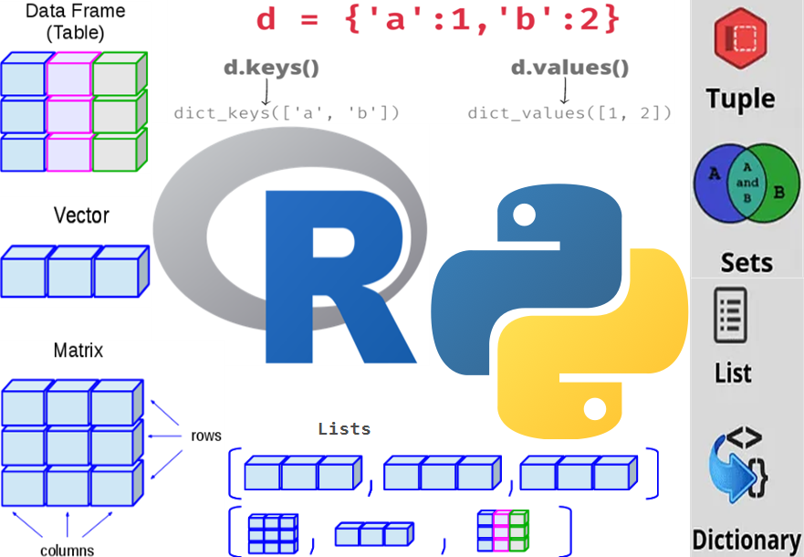

raw_data <-
"Germany is a country with 83.3 million population and its capital is
Berlin; Russia has 144.1 million population, capital of Russia is Moscow;
Another country is Uzbekistan with 35.5 million residents, its capital is
Tashkent.The last country is the USA with 341.2 million residents,
the capital is Washington, D.C."
Set Up
Ushbu blogda kod bloki ya’ni input R da ochiq ko’k und in Python da sariq rangda ko’rsatiladi. Output natijalarining satrlari #> belgisi bilan boshlanadi.
Code
cat("I useR!")
#> I useR!Code
print("I am a Pytonista")
#> I am a PytonistaQo’shimcha ma’lumotlar qutiga quyidagi tarzda yozilgan va uni kengaytirish orqali ko’rish mumkin:
Qisqacha tushuncha yoki eslatmalar yon tomonda (o’ngda) izoh kabi keltiriladi.
Data Structures
Ma’lumotlarning asosiy turlari mavjud, ular Basic Data Types yoki Built-in Data Types deb ham ataladi. Ular qiymat belgilash yoki o’zgaruvchi ya’ni objecni yaratishda ushbu yaratilayotgan object/o’zgaruvchi qanaqa qiymatlarni qabul qilishi va ushbu objectlarga qaysi amallar qo’llanilishi mumkinligini aniqlaydi. Misol uchun 42 raqamini var_number nomli o’zgaruvchiga yuklash va uni integer turi bilan saqlash mumkin. Keyin bu o’zgaruvchi bilan ko’paytirish, qo’shish va boshqa amallarni bajarish mumkin. Shunday ekan, datalarni ya’ni ma’lumotlarni real muhit haqidagi tizimli ravishda kodlangan informatsiyasi (Weidmann 2023) deb hisoblash mumkin. Ma’lumotlar shundagina bizga foydali bulishi mumkin, qachonki ular saqlash, bo’lishish, tahlil qilish va unga har qanday amal va funksiyalarni qo’llash mumkin bo’lgan formatdga ega bo’lsa. Bu narsalarni, demak ma’lumotlarni boshqarish, qayta ishlash, saqlashni va shu kabi jarayonlarni Data Dstructure, ya’ni ma’lumotlar strukturasi belgilaydi. Yuqordiga fikrlarni mohiyatini (Weidmann 2023)ga asoslangan misol tariqasida batafsilroq tushunish mumkin.
Basic Data Types haqido to’liqroq: R & Python: Types of Data.
Misolda Germaniya, O’zbekiston, Rossiya va AQSh da 2023 yildagi aholi soni, (“World Population Review” Feb 2024) web saytidan olingan.
Biz asosan raw_data objectini to’rtta mamlakat, ularning poytaxtlari va aholisi haqida ma’lumotni o’z ichiga olgan ma’lumotlar bazasi sifatida ko’rishimiz mumkin. Inson uchun bu matn shaklida saqlangan ma’lumotdan informatsiya ajratib olishi oson, masalan, qaysi mamlakat aholisi ko’proq, aholi sonlari ichida maximum yoki minimumi qaysi va hokazo. Lekin kompyuterlar uchun uni hisoblash yo’li bilan qayta ishlash tushunarli emas, chunki ma’lumotlar hech qanday tuzilmaga, ya’ni strukturaga ega emas. Ammo biz aynan shu matnni tarkibini o’zgartirmasdan boshqa shaklda, demak ma’lum bir tuzilishda, masalan dataframe shaklida saqlashimiz mumkin. Bunday holda ma’lumotlar kompyuterga tushunarli bo’ladi, ular ustida amallarni bajarib, ularni qayta ishlay oladi.
show the code
#> country population capital
#> 1 Germany 83.3 Berlin
#> 2 Uzbekistan 35.5 Tashkent
#> 3 Russia 144.1 Moscow
#> 4 USA 341.2 WashingtonIkkinchi misolda ma’lumotlar R dagi data.frame paketi orqali object (df_r) sifatiqda saqlangan. R da bu, Python dayam buning uchun pandas moduli bo’lgani kabi, ma’lumotlarni jadval shaklida saqlaydigan ma’lumotlar tuzilmasi hisoblanadi. Misolda har bir mamlakatda turli xil shakldagi ma’lumotlar mavjud. County va Capital - matn shaklida (R da character, Python da string), Population - real son shaklida (R da numeric/double, Python da float). Birinchi misolda oddiy matn (raw_data) sifatida saqlangan ma’lumotlar bilan taqqoslaganda, dataframe yoki jadval (df_r) sifatida saqlangan ma’lumotlarni tushunish va qayta ishlash (komputer uchun) osonroq.
show the code
#> Sum of population: 604.1
#> Max of Population: 341.2
#>
#> Summary of data:
#> country population capital
#> Length:4 Min. : 35.50 Length:4
#> Class :character 1st Qu.: 71.35 Class :character
#> Mode :character Median :113.70 Mode :character
#> Mean :151.03
#> 3rd Qu.:193.38
#> Max. :341.20show the code
#> Sum of population: 604.0999999999999
#> Sum of population: 341.2
#>
#> Summary of data:
#> population
#> count 4.000000
#> mean 151.025000
#> std 134.346799
#> min 35.500000
#> 25% 71.350000
#> 50% 113.700000
#> 75% 193.375000
#> max 341.200000How is the data are structured in R and Python
Ma’lumotni qayerda, R yoki Python da, qayta ishlasak ham, u ikkala tilda ham Object sifatida saqlanadi. Objectlar, masalan, qiymatni (object) o’zgaruvchiga (object nomi) belgilash orqali yaratilishi mumkin. Aytaylik, biz age deb nomlangan objectni yaratamiz va unga 35 (yosh) qiymatini beramiz: age <- 35 (R da) und age = 35 (Python da). Lekin ko’pincha biz minglab objectlarni birma-bir qo’lda yaratishni (age1, age2, age3, …) xohlamaymiz, aksincha barcha yosh (object)-larni (ya’ni age1, age2, …), o’z ichiga olgan ages deb nomlangan ro’yxat shaklida bo’lsa bizga qulayroq. Ikkinchi usulda bu guruhlangan ma’lumotlar strukturasi (grupped data structure)ga, ya’ni bir nechta alohida objectlardan tashkil topgan objectga aylanadi. Bunaqa strukturaga ega bo’lgan, Lists, Vectors, Arrays, Series, Dictionaries etc. kabi turli xil objectlar mavjud. Ular formati, tuzilishi, metodi va boshqalar bilan farqlanadi, lekin asosiy mohiyati bir xil: bir nechta objectlar guruhlangan yoki birlashtirilgan objectda (yuqoridagi ma’lumotlar tuzilmalaridan birning shaklida) saqlanadi.
show the code
#> [1] 35 24 42 24 52 35 37
#> [1] "numeric"
#> [1] "Ali" "Temur" "Ben" "Brandon" "John" "Doe" "Dirk"
#> [1] "character"
More about
c() in R
R da ketma-ketliklar c() (c- combine) yordamida yaratiladi. Python da objectlar yoki ma’lumotlarni [] shaklida kiritiladi.
show the code
#> [35, 24, 42, 24, 52, 35, 37]
#> <class 'list'>
#> ['Ali', 'Temur', 'Ben', 'Brandon', 'John', 'Doe', 'Dirk']
#> <class 'list'>Yuqoridagi misol tariqasida yaratilgan ro’yxatlar (ages, names) R va Python da o’xshash, faqat bu objectlar R da Vector, Python da List deb ataladi. Lekin R va Python da ro’yxatlardan tashqari boshqa ma’lumotlar tuzilmalari ham mavjudki, ular xususiyatlari jihatidan bir biriga o’xshaydi yoki farq qiladi. Ma’lumotlar tuzilmalarini R va Python da o’xshash yoki farq nuqtai nazaridan solishtirganda, muhimi narsa bu objectlarning bir hil (homogeneous) yoki har hil (heterogeneous) bo’lishidir, manimcha.
homogeneous – (однородный) objectlar bir xil turda bo’ladi (barcha objectlar faqat raqamlar yoki matnlarddan iborat), masalan R dagi Vector, NumPy dagi arraylar yoki Python dagi faqat bir xil turdagi ma’lumot turlaridan iborat bo’lgan ro’yxatlar. Vektoren in R oder NumPy-Arrays oder Liste mit gleichen Datentypen in Python heterogeneous – (неоднородный) objectlar har xil turda bo’ladi, R dagi list, Python dagi list (har xil turdagi objectlaR dan tashkil topgan) yoki dictionary
Data Structures in R
R dagi muhim ma’lumotlar tuzilmalari ikkita asosiy tamopyil bilan aniqlanishi mumkin. Biri bu o’lcham (dimension), ya’ni objectning qancha o’lchamga ega ekanligi bilan: bitta o’lchovli (vevtor), ikkita o’lchovli (matritsa) va undan ko’p (massivlar). Yana biri bu ularning farqlanish xususiyatlari, ya’ni biror objectning elementlari bir xil - masalan faqar matn yoki faqat sonlaR dan iborat, yoki har xil - son va matnlaR dan iborat. Ushbu xususiyatlarga asoslanib, markaziy object turlarini R da quyidagicha umumlashtirish mumkin (Sauer 2019):
| Dimension | Homogen | Heterogen |
|---|---|---|
| 1d | Vector | List |
| 2d | Matrix | Dataframe |
| nd | Array |
Vektorlar R dagi eng muhim ma’lumotlar tuzilmalaridan biri bo’lib, R objectlarida markaziy elementni ifodalaydi: To’rt turdagi atomik yoki sof vektorlar mavjud: Logical, Integer, Double und Character (matndan iborat). R da integer va double turidagi ma’lumotlar numeric sifatida umumlashtirilgan, yani ikkovi ham numeric sifatida ko’rsatiladi. Quyida (Wickham 2019)ga ko’ra atomar ya’ni sof vektorlarining umumiy ko’rinishi keltirilgan.
{kind=link}
Data Structures in Python
Demak, ma’lumotlar tuzilmalari ma’lumotlarni turlari bo’yicha tartibga soluvchi va guruhlaydigan “konteynerlar” sifatida qaralsa boladi. Python dagi asosiy Python ma’lumotlar tuzilmalari ro’yxat (list), to’plam (set), kortej (tuple) va lug’at (dict) larni o’z ichiga oladi. Bu ma’lumotlar tuzilmalari Built-in Data Structure deb ham ataladi va ularning har biri o’ziga xos xususiyatga ega.
- lists
- ditionaries
- tuples
- sets
Bundan tashqari Arrays va Dataframes(Jadvallar) mavjud bo’lib, ular qator va ustunlarga ega. Bunga o’xshash misol qilib, Excel-jadvallari yoki ma’lumotlar bazasini keltirisch mumkin.
- arrays from NumPy (Numerical Python)
- DataFrame from Pandas
Quyida malumotlar tuzilmasini R va Python da umumlashtirilgan holatda vizual tarzda grafikda tasvirlangani keltirilgan
Homogeneous data structure
Yuqorida aytib o’tilganidek, bir hil ma’lumotlar tuzilmalari bir xil turdagi ma’lumotlarni (objectlar yoki elementlarni) o’z ichiga oladi. Ko’pincha ma’lumotlar shu tarzda saqlanadi. Bunday turdagi ma’lumotlarga R dagi vektorlarni (Python dagi 1d-NumPy-Massivlar), matrisalarni (Python dagi 2d-NumPy-Massivlar) va massivlarni (Python dagi nd-NumPy-Massivlar) misol qilish mumkin.
vector in R and arrays & Series in Python
R dagi vektorlar bi xil tudagi ma’lumotlarga ega bo’lgan bir o’lchovli ma’lumot tizilmalaridir. Bu belgilari bilan vektorlar Python dagi 1d-NumPy-Arrays va Pandas-Series lar bilan umumiy xususiyatga ega. R dagi vektorlar ham Python dagi ro’yxatga (list) o’xshaydi, lekin faqat Python ro’yxatidagi ma’lumotlar bir xil turga ega bo’lsa.
Creating
– with c() (like [] in Python)
show the code
#> [1] 1 7 2 4 5 8 2 9
#> [1] "numeric"
#> [1] "a" "b" "c" "z" "f"
#> [1] "character"
#> [1] FALSE FALSE FALSE FALSE FALSE
#> [1] "logical"
#> [1] 0 0 0 0 0 0 0
#> [1] "numeric"– with seq(from, to, by) (like range(from, to, by) in Python or arange() from NumPy)
show the code
#> [1] 2 3 4 5 6 7 8 9
#> [1] 1 2 3 4 5
#> [1] 3 6 9
#> [1] 3.00 4.75 6.50 8.25 10.00
#> [1] 11.0 12.5 14.0 15.5 17.0– with rep() (like np.repeat() from NumPy or pd.rep() from Pandas)
– with sample() or runif() (like random.choice() from NumPy)
show the code
smp1 <- sample(seq(10), size = 5, replace = FALSE); smp1
vec <- c("negative","neutral", "positive")
smp2 <- sample(vec, size = 5, replace = TRUE); smp2
# vector with 5 elements:
run1 <- runif(5); run1
run2 <- runif(3, min = 1, max = 10); run2
run3 <- floor(runif(15, min=1, max=100)); run3
# normal distribution
rn <- rnorm(5); rn#> [1] 5 9 3 7 4
#> [1] "positive" "negative" "neutral" "neutral" "positive"
#> [1] 0.3537153 0.2050273 0.8014935 0.6748722 0.4180435
#> [1] 5.482090 8.513366 3.509195
#> [1] 36 86 69 80 25 48 54 32 70 72 39 3 2 28 64
#> [1] 1.3260384 -0.8598712 0.1403112 1.2711931 0.2855230– with [] like c() in R
show the code
#> [1, 7, 2, 4, 5, 8, 2, 9]
#> <class 'list'>
#> [False False False False False]
#> <class 'numpy.ndarray'>
#> [0 0 0 0 0 0 0]
#> <class 'numpy.ndarray'>
#> [1 1 1 1 1 1 1]
#> <class 'numpy.ndarray'>– with arange() like seq() in R
show the code
#> [0, 1, 2, 3, 4]
#> [2, 3, 4, 5, 6, 7, 8, 9]
#> array([2, 3, 4, 5, 6, 7, 8, 9])
#> array([3, 6, 9])
#> (array([ 3. , 4.75, 6.5 , 8.25, 10. ]), 1.75)– with np.repeat() or pd.Series.repeat() like rep() in R
show the code
#> [1, 2, 3, 1, 2, 3, 1, 2, 3]
#> array([1, 2, 3, 1, 2, 3, 1, 2, 3])
#> array([1, 1, 1, 2, 2, 2, 3, 3, 3])
#> 0 1
#> 0 1
#> 1 2
#> 1 2
#> 2 3
#> 2 3
#> dtype: int64– with random() like sample() or runif() in R
show the code
from numpy import random
lis = ["negative","neutral", "positive"]
rd1 = random.choice(lis, size=5, replace = True); print(rd1)
rd2 = random.rand(5); rd2 # 5 random numbers
rd3 = random.randint(100, size=(5)); rd3 # integer random numbers from 0 to 100
rd4 = random.randn(4); rd4 # standard normal distribution#> ['neutral' 'negative' 'positive' 'neutral' 'negative']
#> array([0.25204178, 0.6272701 , 0.36329345, 0.51333149, 0.44805849])
#> array([43, 22, 41, 23, 58])
#> array([1.16180671, 0.53726394, 0.22335244, 1.64363635])Slicing
Vektorlar, ro’yxatlar va bir o’lchovli massivlarga qo’llanilishi mumkin bo’lgan eng muhim foydali operatsiyalaR dan biri indekslashdir. Bunda biz alohida elementlarni yoki elementlaR dan iborat kichik to’plamlarini joylashuvi (indeks) bo’yicha ajratib olishimiz mumkin.
Birinchi Elementning indksi R da – 1, Python da – 0, ya’ni Elementlar joylashuvi R da biR dan, Python da esa noldan boshlanadi. Vektor, ro’yxat yoki 1d - massivning uzunligini R da length(Obj) funksiyasi va Python da len(Obj) funksiyasi yoR damida aniqlash mumkin.
{kind=link}
# In Python
lst = [1,3,5,7]
lst[0] # first element
lst[1] # second element
lst[-1] # last element
lst[::-1] # backward# In R
# Used Variable lst created in Python Chunk
py$lst[1] # first element
py$lst[2] # second element
py$lst[[length(py$lst)]] # last element
rev(py$lst) # backward#> 1
#> 3
#> 7
#> [7, 5, 3, 1]#> [1] 1
#> [1] 3
#> [1] 7
#> [1] 7 5 3 1Quyida to’plamlar va mantiqiy indekslashga yana misollar keltirilgan. Mantiqiy indekslashda mantiqiy qiymati TRUE bo’lgan elementlar qaytariladi.
show the code
age <- c(18, 26, 32, 41, 55, 22, 35, 37, 20, 25)
age[1:5] # from first until fifth element
age[3:7] # from third until seventh element
age[5:length(age)] # from fifth until last element
age[c(2,5,7)] # second, fifth and seventh element
age < 30 # logic
age[age < 30] # age under 30
age[which(age < 30)] # with which()#> [1] 18 26 32 41 55
#> [1] 32 41 55 22 35
#> [1] 55 22 35 37 20 25
#> [1] 26 55 35
#> [1] TRUE TRUE FALSE FALSE FALSE TRUE FALSE FALSE TRUE TRUE
#> [1] 18 26 22 20 25
#> [1] 18 26 22 20 25Elementlarga nomi bilan ham murojaat qilinishimiz mumkin, lekin faqat ular nomlangan bo’lsa (Chunki R da vektor yoki list elementlari nomlanishi yoki nomlanmasligiyam mumin). Buni Pandas-Series da indeks nomi bo‘yicha elementlarni tanlash orqali ham qilish mumkin:
show the code
age = np.array(r.age) # create array from r vector age
age[:5] # from first until fifth element
age[2:7] # from third until seventh element
age[4:] # from fifth until last element
[age[2], age[5], age[7]] # second, fifth and seventh elem
age < 30 # logic
age[age < 30] # age under 30
age[np.where(age<30)] # with np.where()#> array([18., 26., 32., 41., 55.])
#> array([32., 41., 55., 22., 35.])
#> array([55., 22., 35., 37., 20., 25.])
#> [32.0, 22.0, 37.0]
#> array([ True, True, False, False, False, True, False, False, True,
#> True])
#> array([18., 26., 22., 20., 25.])
#> array([18., 26., 22., 20., 25.])Pandas-Series da ham elementlarga ularning joylashuvi yoki nomi bilan murojaat qilish mumkin, R dagi named vectordagi kabi.
show the code
#> bad 2
#> good 3
#> medium 4
#> best 5
#> dtype: int64
#> 3
#> best 5
#> bad 2
#> dtype: int64
#> 4
#> good 3
#> medium 4
#> best 5
#> dtype: int64matrix in R and 2d-Array in Python
R da matrisalar bu ikki o’lchamli vektorlar bo’lib, sonlaR dan iborat va shu bilan birga bir xil turdagi elementlaR dan tashkil topgan. Ularni matrix(data, nrow, ncol) funksiyasi yoR damida yaratish mumkin. Python da matritsalar yaratish uchun aniq funktsiya yo’q. Python dagi matritsalar asosan 2d-NumPy -massivlaridir. Elementlarni ajratish uchun vektorlar yoki 1d-NumPy-massivlari ga qo’llanadiga metodlar qo’llaniladi (oldingi bob), demak qator indeksiga qo’shimcha ravishda ustun indeksi ham to’rtburchakli qavsga [] kiritiladi.
show the code
matrix_c <- matrix(seq(12), nrow = 3, ncol = 4, byrow = FALSE )
cat("3x4-Matix filling by columns (matrix_c):\n");print(matrix_c)
# Dimension of matrix_c
glue("Dimension of matrix_c: {dim(matrix_c)}")
# Counts of rows & Cols from matrix_c
glue("Shape of matrix_c: ({nrow(matrix_c)}, {ncol(matrix_c)})")
matrix_r <- matrix(seq(12), nrow = 4, ncol = 3, byrow = TRUE )
cat("\n4x3-Matix filling by rows (matrix_r):\n");print(matrix_r)
# Dimension of matrix_r
glue("Dimension of matrix_r: {dim(matrix_r)}")
# Counts of rows & Cols from matrix_r
glue("Shape of matrix_r: ({nrow(matrix_r)}, {ncol(matrix_r)})")
#
cat("\nSlicing:\n")
matrix_c[2,3] # row 2, col 3
matrix_c[,4] # column 4
matrix_c[, c(2, 4)] # columns 2 and 4
matrix_r[2,] # row 2
# Name cols & rows
cat('\nname the columns and rows of matrix "matrix_r":\n')
colnames(matrix_r) <- c("col1", "col2", "col3")
rownames(matrix_r) <- c("row1", "row2", "row3", "row4")
matrix_r#> 3x4-Matix filling by columns (matrix_c):
#> [,1] [,2] [,3] [,4]
#> [1,] 1 4 7 10
#> [2,] 2 5 8 11
#> [3,] 3 6 9 12
#> Dimension of matrix_c: 3
#> Dimension of matrix_c: 4
#> Shape of matrix_c: (3, 4)
#>
#> 4x3-Matix filling by rows (matrix_r):
#> [,1] [,2] [,3]
#> [1,] 1 2 3
#> [2,] 4 5 6
#> [3,] 7 8 9
#> [4,] 10 11 12
#> Dimension of matrix_r: 4
#> Dimension of matrix_r: 3
#> Shape of matrix_r: (4, 3)
#>
#> Slicing:
#> [1] 8
#> [1] 10 11 12
#> [,1] [,2]
#> [1,] 4 10
#> [2,] 5 11
#> [3,] 6 12
#> [1] 4 5 6
#>
#> name the columns and rows of matrix "matrix_r":
#> col1 col2 col3
#> row1 1 2 3
#> row2 4 5 6
#> row3 7 8 9
#> row4 10 11 12show the code
matriks_c = np.arange(1,13).reshape(3,4, order = "F")
print(f"3x4-Matix filling by columns (matriks_c):\n{matriks_c}")
# Dimension of matrix matriks_c
print(f"Dimension of matrix matriks_c: {matriks_c.ndim}")
# Counts of rows & Cols from matriks_c
print(f"Shape of matriks_c: {matriks_c.shape}")
# np.shape(matriks_c)[0]; np.shape(matriks_c)[1]
matriks_r = np.arange(1,13).reshape(4,3, order = "C")
print(f"\n4x3-Matix filling by rows (matriks_r):\n{matriks_r}")
# Dimension of matrix matriks_r
print(f"Dimension of matrix matriks_r: {matriks_r.ndim}")
# Counts of rows & Cols from matriks_r
print(f"Shape of matriks_r: {matriks_r.shape}")
# np.shape(matriks_r)[0]; np.shape(matriks_r)[1]
#
print("\nSlicing:")
matriks_c[1,2] # row 2, col 3
matriks_c[:, 3] # column 4
matriks_c[:, [1,3]] # columns 2 and 4
matriks_r[1, :] # row 2
# Name cols & rows
print('\nname the columns and rows of matrix "matriks_r":')
colnames = ["col1", "col2", "col3"]
rownames = ["row1", "row2", "row3", "row4"]
pd.DataFrame(matriks_r, columns = colnames, index = rownames)#> 3x4-Matix filling by columns (matriks_c):
#> [[ 1 4 7 10]
#> [ 2 5 8 11]
#> [ 3 6 9 12]]
#> Dimension of matrix matriks_c: 2
#> Shape of matriks_c: (3, 4)
#>
#> 4x3-Matix filling by rows (matriks_r):
#> [[ 1 2 3]
#> [ 4 5 6]
#> [ 7 8 9]
#> [10 11 12]]
#> Dimension of matrix matriks_r: 2
#> Shape of matriks_r: (4, 3)
#>
#> Slicing:
#> 8
#> array([10, 11, 12])
#> array([[ 4, 10],
#> [ 5, 11],
#> [ 6, 12]])
#> array([4, 5, 6])
#>
#> name the columns and rows of matrix "matriks_r":
#> col1 col2 col3
#> row1 1 2 3
#> row2 4 5 6
#> row3 7 8 9
#> row4 10 11 12Multidimensional arrays
R dagi (ko’p o’lchamli) massivlar array(vector, dim = c(nrow, ncol, nmat)) funksiyasi yoR damida yaratiladi. Bunda Vektor - bir xil turdagi ma’lumotlar qatori, nrow va ncol - satr va ustun raqamlari, nmat - o’lchamni, ya’ni massivdagi nrow*ncol matritsalar sonini bildiradi.
Python da massivlar yaratish uchun numpy.arange(), numpy.zeros(), numpy.ones() kabi bir nechta funksiyalar mavjud. Quyida R va Python da 3D massiv, shuningdek, elementlarni kesish yoki ajratish (slicing) va qator va ustunlarning yig’indini hisoblash ko’rsatilgan.
Quyida 3D massivda slicing va ushbu massivda yig’indini hisoblash misoli tariqasida vizual va amaliy ravishda keltirilgan.
{kind=link}
Slicing
Vektorlar hamda 1d- yoki 2d- massivlaR da bo’lgani kabi, 3D massivlaR da ham massivdan alohida biror elementni yoki bir necha elementladan iborat biror to’plamni ajratib ya’ni kesib olish mumkin. Bunda element indeksi yoki elementlar indekslari bizga tanish bo’lgan kvadrat qavslar [] ichiga kiritiladi. Yuqoridagi rasmda misol qilib keltirilgan massiv shape = (3, 4, 2) shakl yoki formatga ega. Buni R dagi dim(array) va Python dagi array.shape funksiyalari orqali aniqlash mumkin. Qavs ichidagi sonlar: 3 - qator, 4 - ustun va 3 - o’lchamni bildiradi. Bu degani, misolda keltirilgan massiv 3 ta qator va 4 ta ustundan iborat ikkita matrisadan tashkil topgan. Indekslashda to’g’ri pozitsiyani kiritish kerak bo’ladi, ya’ni (R da) kvadrat qavsga birinchi qator positsiyasi, ikkinchi ustun va uchunchi matrisa positsiyani berish kerak. Masalan, arr_r[, , 2] barcha satr va ustunlar bilan ikkinchi matritsani qaytaradi. Matrisalarni arraydagi qatlam deb tasavvur qilsayam bo’ladi, misoldagi array demak 2 ta qatlam yani matrisalaR dan iborat (3 qator 4 ustun bilan).
show the code
# Create 3d-array
arr_r <- array(c(0:23), dim = c(4,3,2))
arr_r <- aperm(arr_r, perm = c(2,1,3))
cat("3d-Array:")
arr_r
cat("Shape: ",dim(arr_r), "\n")
cat("\n1st matrix/2d-Array of the 3d-Array (arr_r):\n")
arr_r[, , 1]
cat("\nElement in 2nd row and 1st col of the 2nd matrix from 3d-Array (arr_r):\n")
arr_r[2, 1, 2]
cat("\n3rd column elements of the 2nd matrix from 3d-Array (arr_r):\n")
arr_r[, c(3), 2]
cat("\n2nd row elements of the 1st matrix from 3d-Array (arr_r):\n")
arr_r[c(2), , 1]
cat("\nCheck if elemnt (9) exist in the array:\n")
9 %in% arr_r#> 3d-Array:, , 1
#>
#> [,1] [,2] [,3] [,4]
#> [1,] 0 1 2 3
#> [2,] 4 5 6 7
#> [3,] 8 9 10 11
#>
#> , , 2
#>
#> [,1] [,2] [,3] [,4]
#> [1,] 12 13 14 15
#> [2,] 16 17 18 19
#> [3,] 20 21 22 23
#>
#> Shape: 3 4 2
#>
#> 1st matrix/2d-Array of the 3d-Array (arr_r):
#> [,1] [,2] [,3] [,4]
#> [1,] 0 1 2 3
#> [2,] 4 5 6 7
#> [3,] 8 9 10 11
#>
#> Element in 2nd row and 1st col of the 2nd matrix from 3d-Array (arr_r):
#> [1] 16
#>
#> 3rd column elements of the 2nd matrix from 3d-Array (arr_r):
#> [1] 14 18 22
#>
#> 2nd row elements of the 1st matrix from 3d-Array (arr_r):
#> [1] 4 5 6 7
#>
#> Check if elemnt (9) exist in the array:
#> [1] TRUEOperations
R dagi massivlar yig’indisini hisoblash uchun rowSums() - satrlar yig’indisi, colSums() - ustunlar yig’indisi, funksiyalaridan foydalanish mumkin. R da ham Python dagi kabi sum() funksiyasi mavjud, lekin bu yeR da buni apply funksiyasi bilan birga qo’llash kerak.
show the code
#> 3d-Array:, , 1
#>
#> [,1] [,2] [,3] [,4]
#> [1,] 0 1 2 3
#> [2,] 4 5 6 7
#> [3,] 8 9 10 11
#>
#> , , 2
#>
#> [,1] [,2] [,3] [,4]
#> [1,] 12 13 14 15
#> [2,] 16 17 18 19
#> [3,] 20 21 22 23
#>
#> Sum by row-wise with rowSums:
#> [1] 60 92 124
#>
#> Sum by row-wise with apply, same like rowSums:
#> [1] 60 92 124
#>
#> Sum by column-wise with colSums:
#> [,1] [,2]
#> [1,] 12 48
#> [2,] 15 51
#> [3,] 18 54
#> [4,] 21 57
#>
#> Sum by column-wise with apply
#> [1] 60 66 72 78{kind=link}
Slicing
array.shape funksiyasi yuqoridagi misoldagi massivdan = (2, 3, 4) shaklini qaytaradi. Ya’ni, birinchi son - 2, o’lchamni, ikkinchi son - 3, qatorni va uchinchi son - 4, ustunni qaytariyapti. Bu massivda har birida 3 ta satr va 4 ta ustundan iborat 2 ta matritsa borligini bildiradi. Tasavvur qiling, bitta kubik bor. Agar biz shu kubikni o’rtasidan kessak, ikkita matrisa yoki 2d_massivga ajraladi. Har bir matrisani massivning qatlami yoki jadvali (layer/sheet) deb tasavvur qisa bo’ladi. Indekslashda to’g’ri pozitsiyani kiritish kerak bo’ladi, ya’ni (Python da) kvadrat qavsga birinchi matrisa positsiyani, ikkinchi qator va uchunchi ustun positsiyani berish kerak (Shu yeR da ahamiyat berilgan bo’lsa R da boshqacharoq edi: 1chi - qator, 2chi - ustun va 2chi - qatlam, ya’ni matrisa positsiyasi). Masalan, bu yeR da arr_r[1, :, :] barcha satr va ustunlar bilan ikkinchi matritsani qaytaradi.
Shape is displayed differently in R and Python
Etibor berilgan bo’lsa, bir xil massiv uchun shape qaytaradigan qiymatlar taridib R bilan Python da farq qilayapti: shape in R = (3, 4, 2), shape in Python = (2, 3, 4). R da birinchi qatorlar soni, ikkinchi ustunlar soni va uchinchi matrisalar soni ko’rsatilayapti. Python da esa birinchi o’lcham ya’ni matrisalar soni, ikkinchi qatorlar soni va uchinchi ustunlar soni kelayapti.
show the code
# create 3d-Array
arr3d = np.arange(24).reshape(2,3,4)
print("3d-Array")
arr3d
print(f"\nShape: {arr3d.shape}")
print(f"\n1st 2d-Array (sheet,matrix, layer) of the 3d-Array (arr3d):")
arr3d[0, :, :] # or arrd[0]
print(f"\n3rd column elements of the 2nd sheet from 3d-Array (arr3d):")
arr3d[1, :, 2]
print(f"\n2nd row elements of the 1st sheet from 3d-Array (arr3d):")
arr3d[0, 1, :]
print(f"\nElement (20) in 3rd row and 1st col of the 2nd sheet\nfrom 3d-Array (arr3d):")
arr3d[1, 2, 0]
print(f"\nElements (22, 23) from 3rd row and columns 3 and 4\nin the 2nd sheet:")
arr3d[0, 2, 2:]
print(f"\nElement (9) in 3rd row and 2nd col of the 1st sheet\nfrom 3d-Array (arr3d):")
arr3d[0, 2, 1]
print(f"\nElement (11) in 3rd row and last col of the 1st sheet\nfrom 3d-Array (arr3d):")
arr3d[0, 2, 3]#> 3d-Array
#> array([[[ 0, 1, 2, 3],
#> [ 4, 5, 6, 7],
#> [ 8, 9, 10, 11]],
#>
#> [[12, 13, 14, 15],
#> [16, 17, 18, 19],
#> [20, 21, 22, 23]]])
#>
#> Shape: (2, 3, 4)
#>
#> 1st 2d-Array (sheet,matrix, layer) of the 3d-Array (arr3d):
#> array([[ 0, 1, 2, 3],
#> [ 4, 5, 6, 7],
#> [ 8, 9, 10, 11]])
#>
#> 3rd column elements of the 2nd sheet from 3d-Array (arr3d):
#> array([14, 18, 22])
#>
#> 2nd row elements of the 1st sheet from 3d-Array (arr3d):
#> array([4, 5, 6, 7])
#>
#> Element (20) in 3rd row and 1st col of the 2nd sheet
#> from 3d-Array (arr3d):
#> 20
#>
#> Elements (22, 23) from 3rd row and columns 3 and 4
#> in the 2nd sheet:
#> array([10, 11])
#>
#> Element (9) in 3rd row and 2nd col of the 1st sheet
#> from 3d-Array (arr3d):
#> 9
#>
#> Element (11) in 3rd row and last col of the 1st sheet
#> from 3d-Array (arr3d):
#> 11Operations
Paython da massivlar yig’indisini hisoblash uchun yig’indini qay tarzda hisoblashga qarab, o’qni ya’ni axis kiritish kerak bo’ladi. Axis = 0 da, yig’indi massivning n matritsalari bo’yicha hosil bo’ladi. Axis = 1 holatda yig’indi ustunlar bo’ylab va axis = 2 holatda qatorlar bo’yicha hisoblanadi(Buni yuqorida keltirilgan rasmda ko’rish mumkin).
show the code
#> a 3d-array - arr3d:
#> array([[[ 0, 1, 2, 3],
#> [ 4, 5, 6, 7],
#> [ 8, 9, 10, 11]],
#>
#> [[12, 13, 14, 15],
#> [16, 17, 18, 19],
#> [20, 21, 22, 23]]])
#>
#> Shape:
#> (2, 3, 4)
#>
#> Sum by sheets (axis =0):
#> array([[12, 14, 16, 18],
#> [20, 22, 24, 26],
#> [28, 30, 32, 34]])
#>
#> Sum by column-wise (axis = 1):
#> array([[12, 15, 18, 21],
#> [48, 51, 54, 57]])
#>
#> Sum by row-wise (axis = 2):
#> array([[ 6, 22, 38],
#> [54, 70, 86]])Heterogeneous data structure
Geterogen ma’lumotlar tuzilmalari elementlari har xil bo’lgan objectlarni anglatadi. Masalan, har xil turdagi ma’lumotlarga ega elementlarni ro’yxat sifatidagi objectda saqlanishi mumkin.
lists in R and lists & dicts in Python
lists in R
R dagi ro’yxatning vektorga nisbatan farqi shundaki, ro’yxat elementlari bir hil turda bo’lishi shart emas va elementlarning uzunligi har xil bo’lishi mumkin. Ro’yxat yaratish uchun R da list() funksiyasi mavjud. Indekslashda R da ro’yxat uchun qo’sh (двойной) kvadrat qavs [[]] ishlatiladi (VektoR da bitta kvadrat qavs []).
# create a list
lst_r <- list(1, c(2, 3),
c(TRUE, FALSE),
c("I", "love", "R"), "Hello R")
#
lst_r
#> [[1]]
#> [1] 1
#>
#> [[2]]
#> [1] 2 3
#>
#> [[3]]
#> [1] TRUE FALSE
#>
#> [[4]]
#> [1] "I" "love" "R"
#>
#> [[5]]
#> [1] "Hello R"
cat("Type: ", class(lst_r), "\n")
#> Type: list
# Atribute of the list:
str(lst_r)
#> List of 5
#> $ : num 1
#> $ : num [1:2] 2 3
#> $ : logi [1:2] TRUE FALSE
#> $ : chr [1:3] "I" "love" "R"
#> $ : chr "Hello R"
#
# Check element (Hello R) is in the list
"Hello R" %in% lst_r
#> [1] TRUE
#
# Change the 1st element (1) to 42
lst_r[[1]] <- 42
lst_r[[1]]
#> [1] 42
#
# Remove the last element (Hello R) of the list
lst_r[[length(lst_r)]] <- NULL
lst_r
#> [[1]]
#> [1] 42
#>
#> [[2]]
#> [1] 2 3
#>
#> [[3]]
#> [1] TRUE FALSE
#>
#> [[4]]
#> [1] "I" "love" "R"
#
# Check element (Hello R) is in the list
"Hello R" %in% lst_r
#> [1] FALSE
#
# Remove the 1st (42) and 2nd elements ([2, 3])
(lst_r[-c(1,2)]) # Outer bracket for execute code direct
#> [[1]]
#> [1] TRUE FALSE
#>
#> [[2]]
#> [1] "I" "love" "R"R dagi ro’yxatdagi elementlarni ham nomlash mumkin (Python lug’atlarida bo’lgani kabi). Elementlarga [[]] yoki $ operatori (dollar belgisi) yoR damida murojaat qilish mumkin. Yangilanadigan element indeksiga qiymat belgilash orqali ro’yxatni o’zgartirish yoki olib tashlash mumkin.
lst_named <- list(
"age" = 19,
"sex" = "m",
"it_skills" = c("R", "Python", "Java")
)
#
# 1st element
lst_named[[1]]
#> [1] 19
#
# 3rd element
lst_named[[3]]
#> [1] "R" "Python" "Java"
#
# 2nd element of the 3rd element
lst_named[[3]][2]
#> [1] "Python"
#
# 2nd element by name
lst_named[["sex"]]
#> [1] "m"
#
# 3rd element via $
lst_named$it_skills
#> [1] "R" "Python" "Java"
#
# 2nd element from 3rd element from the list
lst_named$it_skills[2]
#> [1] "Python"
#
# Names of the list
names(lst_named)
#> [1] "age" "sex" "it_skills"append() funksiyasi orqali R roʻyxatiga yangi element qoʻshish mumkin. Bundan tashqari ro’yxatni Vector yoki Data Fareme (agar elementlar nomlangan bo’lsa) kabi boshqa maʼlumotlar strukturasiga aylantirish mumkin.
# Add an element(\"Python\" and \"C++\") into the list(lst_r):
append(lst_r, c("Python", "C++"))
#> [[1]]
#> [1] 42
#>
#> [[2]]
#> [1] 2 3
#>
#> [[3]]
#> [1] TRUE FALSE
#>
#> [[4]]
#> [1] "I" "love" "R"
#>
#> [[5]]
#> [1] "Python"
#>
#> [[6]]
#> [1] "C++"
#
# Convert to vector
unlist(lst_r)
#> [1] "42" "2" "3" "TRUE" "FALSE" "I" "love" "R"
#
# Create alist
emp_list <- list(
emp_name = c("Max", "Ali", "Vali"),
emp_age = c(45, 34, 27),
emp_salary = c(5.300, 3.700, 3.300)
)
#
# Type of emp_list:
class(emp_list)
#> [1] "list"
#
# Convert to data frame
emp_df <- data.frame(emp_list); emp_df
#> emp_name emp_age emp_salary
#> 1 Max 45 5.3
#> 2 Ali 34 3.7
#> 3 Vali 27 3.3
#
# Type of emp_df
class(emp_df)
#> [1] "data.frame"lists in Python
R dagi ro’yxatdagi kabi, Python dagi ro’yxatdagi elementlar/objectlar har xil uzunlik va turlarga ega bo’lishi mumkin. Agar Python dagi ro’yxatning barcha elementlari bir xil turga ega bo’lsa, buni R dagi vektor bilan solishtirish mumkin.
# Create a list
lst_py = [1, [1, 2], True, ["I", "love", "Python"], "Hello Python"]
print(lst_py)
#> [1, [1, 2], True, ['I', 'love', 'Python'], 'Hello Python']
print("\nType: ", type(lst_py))
#>
#> Type: <class 'list'>
#
# Check element (Hello Python) is in the list
"Hello Python" in lst_py
#> True
#
# Change the 1st element (1) to 42
lst_py[0] = 42; lst_py
#> [42, [1, 2], True, ['I', 'love', 'Python'], 'Hello Python']
#
# Remove the last element (Hello Python) from the list
lst_py.pop(); lst_py # pop() removes the last element in the list!!
#> 'Hello Python'
#> [42, [1, 2], True, ['I', 'love', 'Python']]
#
# Remove the 2nd element ([1, 2]) with pop()
lst_py.pop(1); lst_py
#> [1, 2]
#> [42, True, ['I', 'love', 'Python']]
#
# Remove the 1st element (42) with del
del lst_py[-0]
#
# Remove by name
lst_py.remove(True)
lst_py
#> [['I', 'love', 'Python']]Python da ro’yxatga yangi elementni append() funktsiyasi (R kabi) orqali qo’shish mumkin. R da bo’lganidek, Python da ham ro’yxatlar boshqa ma’lumotlar tuzilmalariga, NumPy massiviga, Pandas seriyasiga yoki Pandas DataFrame siga aylantirilishi mumkin.
# Create a list
ls1 = ["Ali", "Vali", "Gani"]; ls1
#> ['Ali', 'Vali', 'Gani']
#
# Add a new element (Max) into the list
# append() adds the new item to the end of the list
ls1.append("Max"); ls1
#> ['Ali', 'Vali', 'Gani', 'Max']
#
# insert() adds an element to the list at the specified index
ls1.insert(1, "Ivan") # inserted at index 1 (2nd position)
#
# Conver to a Pandas Series
ls_pd = pd.Series(ls1); ls_pd
#> 0 Ali
#> 1 Ivan
#> 2 Vali
#> 3 Gani
#> 4 Max
#> dtype: object
type(ls_pd)
#> <class 'pandas.core.series.Series'>
#
# Conver to a A Numpy 1d-Ayrray
ls_np = np.array(ls1); ls_np
#> array(['Ali', 'Ivan', 'Vali', 'Gani', 'Max'], dtype='<U4')
type(ls_np)
#> <class 'numpy.ndarray'>
#
# Convert to a Pandas DataFrame
ls2 = [3, 4, 5, 8, 2]
ls_df = pd.DataFrame(list(zip(ls1,ls2)), columns = ["ls1", "ls2"])
ls_df
#> ls1 ls2
#> 0 Ali 3
#> 1 Ivan 4
#> 2 Vali 5
#> 3 Gani 8
#> 4 Max 2dicts in Python and lists in R
Yuqorida aytib o’tilganidek, vektorlaR dan farqli ravishda, R da ro’yxat elementlari bir xil turdagi bo’lishi shart emas. R dagi ro’yxat elementlarini ham nomlash mumkin, bu named list ya’ni elementlari nomlangan roy’yxat deb ham ataladi. Python da esa ro’yxat elementlarini nomlab bo’lmaydi, lekin Python da R dagi elementlari nomlangan roy’yxat bilan bir xil tuzilmaga ega bolgan lug’atlar (dictionanries) mavjud. Python tilidagi lug’at d = {key : value} tuzilishidan iborat. Lug’atlaR dagi Kalit unique va immutable, ya’ni unikalniy va o’zgarmasdir. Kalitlar uchun odatda satrlar (strings) ishlatiladi. Agar R dagi vektor elementlari nomlansa Python dagi lug’at strukturasiga ega bo’ladi d = list(name = value). Lug’atdagi elementlarga d["key"] orqali, nomlangan vektor/ro’yxatdagi elementlarga vector["name"] yoki vector$name orqali murojaat qilinadi.
Quyida aksiyalar narxlari lug’atlar va nomlangan vektorlarga misol tqariqasida (2024 yil 27 aprel holatiga ko’ra, OnVista’dan) keltirilgan.
show the code
share_name <- c("AMZN", "AAPL", "MBG", "TSLA", "BYD", "BABA", "SAP")
share_value <- c(179.62, 169.30, 74.36, 168.29, 25.36, 75.55, 174.00)
#
cat("Create a named list from vectors:\n")
dic_r <- setNames(as.list(share_value), share_name); dic_r
cat("\nshare price from BYD. slice with [[]]:\n")
dic_r[["BYD"]]
cat("\nshare price from Tesla. slice with $\n")
dic_r$TSLA
cat("\nTyp from dic_r: ", class(dic_r))
cat("\nAdd an element (BMW3) to the list(dic_r[['BMW3']] <- 99.15):\n")
dic_r[["BMW3"]] <- 99.15
cat("Is BMW3 there?\n")
dic_r["BMW3"] %in% dic_r
dic_r[["BMW3"]]
#
cat("\nRemove an element (MBG) from the list (dic_r$MBG <- NULL):\n")
dic_r$MBG <- NULL
cat("Is MBG there?\n")
dic_r["MBG"] %in% dic_r
# convert to python
cat("\nConvert the list (dic_r) to Python object (dic_py)\n")
dic_py <- r_to_py(dic_r)
dic_py
cat("\nType from dic_py:\n")
class(dic_py)#> Create a named list from vectors:
#> $AMZN
#> [1] 179.62
#>
#> $AAPL
#> [1] 169.3
#>
#> $MBG
#> [1] 74.36
#>
#> $TSLA
#> [1] 168.29
#>
#> $BYD
#> [1] 25.36
#>
#> $BABA
#> [1] 75.55
#>
#> $SAP
#> [1] 174
#>
#>
#> share price from BYD. slice with [[]]:
#> [1] 25.36
#>
#> share price from Tesla. slice with $
#> [1] 168.29
#>
#> Typ from dic_r: list
#> Add an element (BMW3) to the list(dic_r[['BMW3']] <- 99.15):
#> Is BMW3 there?
#> [1] TRUE
#> [1] 99.15
#>
#> Remove an element (MBG) from the list (dic_r$MBG <- NULL):
#> Is MBG there?
#> [1] FALSE
#>
#> Convert the list (dic_r) to Python object (dic_py)
#> {'AMZN': 179.62, 'AAPL': 169.3, 'TSLA': 168.29, 'BYD': 25.36, 'BABA': 75.55, 'SAP': 174.0, 'BMW3': 99.15}
#>
#> Type from dic_py:
#> [1] "python.builtin.dict" "python.builtin.object"show the code
print("share price at 27.04.2024:")
for k,v in r.dic_py.items():
print(f"{k} : {v}")
print("\nKeys:", r.dic_py.keys())
print("Values:", r.dic_py.values())
print(f"\nShare of Tesla: {r.dic_py["TSLA"]}")
print("\nAdd MBG to the dictionary(r.dic_py['MBG'] = 74.36):")
r.dic_py["MBG"] = 74.36
print("\nIs MBG in the dictionary?")
"MBG" in r.dic_py
print("\nDelete BYD from dictionary(del r.dic_py['BYD']):")
del r.dic_py["BYD"]
print("\nIs BYD in the dictionary?")
"BYD" in r.dic_py#> share price at 27.04.2024:
#> AMZN : 179.62
#> AAPL : 169.3
#> TSLA : 168.29
#> BYD : 25.36
#> BABA : 75.55
#> SAP : 174.0
#> BMW3 : 99.15
#>
#> Keys: dict_keys(['AMZN', 'AAPL', 'TSLA', 'BYD', 'BABA', 'SAP', 'BMW3'])
#> Values: dict_values([179.62, 169.3, 168.29, 25.36, 75.55, 174.0, 99.15])
#>
#> Share of Tesla: 168.29
#>
#> Add MBG to the dictionary(r.dic_py['MBG'] = 74.36):
#>
#> Is MBG in the dictionary?
#> True
#>
#> Delete BYD from dictionary(del r.dic_py['BYD']):
#>
#> Is BYD in the dictionary?
#> FalsePython da lug’at elementlariga murojaat qilgandan dict["key"] bilan birga dict.get("key", "default") metodi ham mavjud. Ikkala usul ham bir xil natija beradi. Farqi shundaki, izlanayotgan kalit lug’atda mavjudmi yoki yo’qmi. Agar Key mavjud bo’lmasa birinchi usul KeyError hatoligini beradi. get() usuli bu hatolikni oldini oladi. Kalit bmavjud bo’lmagan holatda get odatda None qaytaradi, lekin qaytarilishi kerak bulgan qiymatni o’zgartirsa ham bo’ladi, masalan dict.get("key", "Mavjud emas!") holatda, agar kalit mavjut bo’lmasa, “Mavjud emas!” qqqaytariladi.
show the code
bsp_dic = {
"Ali" : 25,
"Max" : 44,
"Vali": 33
}; bsp_dic
print("With []:")
print(f"Alini yoshi: {bsp_dic["Ali"]}")
print("\nWith get():")
print(f"Alini yoshi: {bsp_dic.get("Ali")}")
lstName = ["Ali", "Gani", "Max", "Vali", "Brandon"]; lstName
print("\nIterate with devault value, if key not exis")
for n in lstName:
# for k, v in bsp_dic.items():
print(f"{n} - {bsp_dic.get(n, 'Mavjud emas!')}" )#> {'Ali': 25, 'Max': 44, 'Vali': 33}
#> With []:
#> Alini yoshi: 25
#>
#> With get():
#> Alini yoshi: 25
#> ['Ali', 'Gani', 'Max', 'Vali', 'Brandon']
#>
#> Iterate with devault value, if key not exis
#> Ali - 25
#> Gani - Mavjud emas!
#> Max - 44
#> Vali - 33
#> Brandon - Mavjud emas!sets and tuples in Python
Python da set{} va tuple() kabi boshqa ma’lumotlar tuzilmalari ham mavjud.
set{} in Python
Turlari bo’yicha guruhlangan elementlarni Python da set, ya’ni to’plam yoR damida ham ifodalash mumkin. Buning uchun elementlarni skobka {}ga kiritiladi yoki ularni set() funksiyasiga beriladi. Ushbu kontseptsiyaning o’ziga xos xususiyati shundaki, elementlar uniquedir, ya’ni har bir object to’plamda faqat bir marta uchraydi. R da ham vektoR dagi takroriy elementlarni olib tashlaydigan unique() funksiyasi mavjud. Bundan tashqari, elementlar tartiblanmagan va ular indekslarga ega emas. set dagi to’plamlar - mutable, ya’ni o’zgaruvchan va frozenset dagi to’plamlar - immutable, ya’ni o’zgarmasdir.
Python da to’plamlar uchun qo’llaniladigan union, intersection va difference metodlar R da ham mavjud, ular vektorlarga qo’llaniladi.
# set() - returns the vector without duplicate values
my_lst = [2, 3, 1, 5, 3, 9, 3, 2, 7]; my_lst
#> [2, 3, 1, 5, 3, 9, 3, 2, 7]
my_set = set(my_lst); my_set
#> {1, 2, 3, 5, 7, 9}
#
# Create a set
x = {1, 2, 3, 4, 5, 6}; x
#> {1, 2, 3, 4, 5, 6}
y = set([4, 5, 6, 7, 8, 9]); y
#> {4, 5, 6, 7, 8, 9}
print(type(x), type(y))
#> <class 'set'> <class 'set'>
#
# union() - combine x and y without duplicates
x.union(y)
#> {1, 2, 3, 4, 5, 6, 7, 8, 9}
#
# intersection() - which obj in both sets
x.intersection(y)
#> {4, 5, 6}
#
# difference() - objects in x, but not in y
x.difference(y)
#> {1, 2, 3}
#
# difference() - objects in y, but not in x
y.difference(x)
#> {8, 9, 7}# Typ of python sets
class(py$x)
#> [1] "python.builtin.set" "python.builtin.object"
class(py$y)
#> [1] "python.builtin.set" "python.builtin.object"
#
# unique() - returns the vector without duplicate values
my_vec <- c(2, 3, 1, 5, 3, 9, 3, 2, 7); my_vec
#> [1] 2 3 1 5 3 9 3 2 7
uniq_vec <- unique(my_vec); uniq_vec
#> [1] 2 3 1 5 9 7
#
# create vectros
x_r <- c(1, 2, 3, 4, 5, 6); x_r
#> [1] 1 2 3 4 5 6
y_r <- c(4, 5, 6, 7, 8, 9); y_r
#> [1] 4 5 6 7 8 9
#
# union() - combine x_r and y_r without duplicates
union(x_r, y_r)
#> [1] 1 2 3 4 5 6 7 8 9
#
# intersection() - which obj in both vectors
intersect(x_r, y_r)
#> [1] 4 5 6
#
# setdiff() - objects in x_r, but not in y_r
setdiff(x_r, y_r)
#> [1] 1 2 3
#
# setdiff() - objects in y_r, but not in x_r
setdiff(y_r, x_r)
#> [1] 7 8 9tuple() in Python
Tuple yoki kortej bir objectga bir nechta (turli turdagi) elementlarni birlashtiradi. Ularni vergul bilan ajratilgan elementlarni qavslar ichiga t = (obj1, obj2, ...) yoki qavslarsiz t = obj1, obj2, ... kiritish bilan yoki tuple(obj) funksiyasi orqali yaratish mumkin. Ro’yxatlaR dan farqli ravishda, tupellar immutable dir, shunga ular o’zgarmas ro’yxat deb ham ataladi. Tupellar yaratilganidan so’ng, elementlarni o’zgartirib bo’lmaydi (qaysi manodaki, elementlariga boshqa qiymat berib bolmaydi, alashtirib bolmaydi, lekin yangi element qo’shsa bo’ladi), agar o’zgartirish zarur bo’lsa, ularni ro’yxatga aylantirib o’zgartirish kiritib, keyin ularni qayta tupelga aylantirib olish mumkin. Tupellarni lug’atlaR da ham ishlatish mumkin.
# create a tuple
t1 = 1, 5, 6, 6, 3; print("t1: ", t1)
#> t1: (1, 5, 6, 6, 3)
t2 = (2, 4, 2, 5, 6); print("t2: ", t2)
#> t2: (2, 4, 2, 5, 6)
t3 = tuple([3, 4, 5, 6, 1]); print("t3: ", t3)
#> t3: (3, 4, 5, 6, 1)
#
# tuples in dict keys
koordinat = {
(0,0) : 100,
(1,1) : 200,
(0,1) : 75
}; koordinat
#> {(0, 0): 100, (1, 1): 200, (0, 1): 75}
# add istem
koordinat[(1,0)] = 125; koordinat
#> {(0, 0): 100, (1, 1): 200, (0, 1): 75, (1, 0): 125}
#
# tuples in dict values
greats = {
"Navoi" : ("Hirot", 1441),
"Bobur" : ("Andijon",1483),
"Temur" : ("Shahrisabz", 1336)
}; greats
#> {'Navoi': ('Hirot', 1441), 'Bobur': ('Andijon', 1483), 'Temur': ('Shahrisabz', 1336)}
#
# iterate dict
for great, (place, year) in greats.items():
print(f"{great} - was born in {place} in {year}.")
#> Navoi - was born in Hirot in 1441.
#> Bobur - was born in Andijon in 1483.
#> Temur - was born in Shahrisabz in 1336.data.frames in R and pandas.DataFrame in Python
Dataframelar, ehtimol, R va Python da ma’lumotlarni saqlash, qayta ishlash va tahlil qilishning eng keng tarqalgan usullaridan bo’lsa kerak. DF (DataFrame) ni to’rtta burchakli (satrlar va ustunlar) jadval sifatida tasavvur qilish mumkin, misol tariqasida eng keng tarqalgani Excel tablolarini (sheets) misol qilib keltirish mumkin. Qatorlar holatlar yoki kuzatishlarni (ingl. observations), ustunlar esa o’zgaruvchilarni yoki statistika tili bilan aytganda xarakteristikalarni (ingl. futures) ifodalaydi. O’ng tomonda Data Frame kichik jadval shaklda misol tariqasida keltirilgan. Jadvalda 10 ta satr (kuzatishlar - bular shaxslar, Navoi, Bobur, …) va 3 ustun (o’zgaruvchi = ism, tug’ilgan yili va tug’ilgan joyi, bular shaxslarning xarakteristikasi, ya’ni shaxslar haqida ma’lumotlar desayam bo’ladi) mavjud.
| names | byear | bplace |
|---|---|---|
| Navoi | 1441 | Hirot |
| Bobur | 1483 | Andijon |
| Temur | 1336 | Shahrisabz |
| Cholpon | 1898 | Andijon |
| Qodiriy | 1894 | Toshkent |
| Ulugbek | 1394 | Samarqand |
| Xorazmi | 783 | Xiva |
| Beruniy | 1048 | Xorazm |
| Termiziy | 824 | Termiz |
| Buxoriy | 810 | Buxoro |
R dagi dataframelar boshqacha aytganda bir xill uzunlikka egan bo’lgan nom berilgan vektorlar ro’yxatidir (Paythondagi pandas.Series lar kabi). Bunda har bir vektor (Series) dataframelar ya’ni jadvallarning ustunini ifodalaydi. Python va R dagi dataframelari dataframe talabini qondirishi kerak bo’lgan ko’pchillik umumiy xususiyatlarga (Brown 2023) ega.
- har bir ustunning uzunligi bir xil bo’lishi kerak
- ustundagi barcha elementlar bir xil turga ega bo’lishi kerak
- SatR dagi elementlar har xil turlaR da bo’lishi mumkin
- Satrlar va ustunlar boshqacha nomlanishi mumkin
Dataframelar R da data.frame() funksiya orqali va Python da pandas modulidagi pandas.DataFrame() funksiya yoR damida yaratiladi.
Create a DF
names <- c("Navoi", "Bobur", "Temur", "Cholpon", "Qodiriy",
"Ulugbek", "Xorazmi", "Beruniy", "Termiziy", "Buxoriy")
byear <- c(1441, 1483, 1336, 1898, 1894, 1394, 783, 1048, 824, 810)
bplace <- c("Hirot", "Andijon", "Shahrisabz", "Andijon", "Toshkent",
"Samarqand", "Xiva", "Xorazm", "Termiz", "Buxoro")
# Create a DataFrame -----------------------------------------
df <- data.frame(names, byear, bplace)
# Type -------------------------------------------------------
class(df)
#> [1] "data.frame"
# nums of rows and cols --------------------------------------
dim(df) # like shape in pandas
#> [1] 10 3
# num of rows ------------------------------------------------
nrow(df)
#> [1] 10
# num of columns ---------------------------------------------
ncol(df)
#> [1] 3
# structur of DataFrame --------------------------------------
# str(df) or
pillar::glimpse(df) # like pandas.DataFrame.info()
#> Rows: 10
#> Columns: 3
#> $ names <chr> "Navoi", "Bobur", "Temur", "Cholpon", "Qodiriy", "Ulugbek", "Xo…
#> $ byear <dbl> 1441, 1483, 1336, 1898, 1894, 1394, 783, 1048, 824, 810
#> $ bplace <chr> "Hirot", "Andijon", "Shahrisabz", "Andijon", "Toshkent", "Samar…
# First n lines, default = 6 ---------------------------------
head(df, n = 3)
#> names byear bplace
#> 1 Navoi 1441 Hirot
#> 2 Bobur 1483 Andijon
#> 3 Temur 1336 Shahrisabz
# Last n lines -----------------------------------------------
tail(df, n=2)
#> names byear bplace
#> 9 Termiziy 824 Termiz
#> 10 Buxoriy 810 Buxoro
# colnames ---------------------------------------------------
colnames(df)
#> [1] "names" "byear" "bplace"
# rows -------------------------------------------------------
rownames(df)
#> [1] "1" "2" "3" "4" "5" "6" "7" "8" "9" "10"# create pandas DataFrame from created df in r -------
df_pd = pd.DataFrame(r.df)
df_pd["byear"] = df_pd["byear"].astype(int)
# Type -----------------------------------------------
type(df_pd)
#> <class 'pandas.core.frame.DataFrame'>
# nums of rows and cols ------------------------------
df_pd.shape # like dim() in r
#> (10, 3)
# num of rows ----------------------------------------
len(df_pd)
#> 10
# num of columns -------------------------------------
len(df_pd.columns)
#> 3
# structur of DataFrame ------------------------------
df_pd.info() # like str() in r
#> <class 'pandas.core.frame.DataFrame'>
#> RangeIndex: 10 entries, 0 to 9
#> Data columns (total 3 columns):
#> # Column Non-Null Count Dtype
#> --- ------ -------------- -----
#> 0 names 10 non-null object
#> 1 byear 10 non-null int32
#> 2 bplace 10 non-null object
#> dtypes: int32(1), object(2)
#> memory usage: 332.0+ bytes
# First n lines, default = 5 -------------------------
df_pd.head(n = 3)
#> names byear bplace
#> 0 Navoi 1441 Hirot
#> 1 Bobur 1483 Andijon
#> 2 Temur 1336 Shahrisabz
# Last n lines ---------------------------------------
df_pd.tail(n = 2)
#> names byear bplace
#> 8 Termiziy 824 Termiz
#> 9 Buxoriy 810 Buxoro
# colnames -------------------------------------------
df_pd.columns
#> Index(['names', 'byear', 'bplace'], dtype='object')
# rows -----------------------------------------------
df_pd.index
#> RangeIndex(start=0, stop=10, step=1)Access a (the) element(s)
# 1st row, 1st col -------------------------------
df[1,1]
#> [1] "Navoi"
# 1-3 rows, all cols -----------------------------
df[1:3, ]
#> names byear bplace
#> 1 Navoi 1441 Hirot
#> 2 Bobur 1483 Andijon
#> 3 Temur 1336 Shahrisabz
# all rows, 1-2 cols -----------------------------
df[, 1:2]
#> names byear
#> 1 Navoi 1441
#> 2 Bobur 1483
#> 3 Temur 1336
#> 4 Cholpon 1898
#> 5 Qodiriy 1894
#> 6 Ulugbek 1394
#> 7 Xorazmi 783
#> 8 Beruniy 1048
#> 9 Termiziy 824
#> 10 Buxoriy 810
# 3 rows, col bplace -----------------------------
df[1:3, 3]
#> [1] "Hirot" "Andijon" "Shahrisabz"
# rows where col bplace = "Andijon" --------------
df[df$bplace == "Andijon", ]
#> names byear bplace
#> 2 Bobur 1483 Andijon
#> 4 Cholpon 1898 Andijon
# rows where col byear < 1000 -------------------
df[df$byear < 1000, ]
#> names byear bplace
#> 7 Xorazmi 783 Xiva
#> 9 Termiziy 824 Termiz
#> 10 Buxoriy 810 Buxoro# 1st row, 1st col -------------------------------------
df_pd.iloc[0,0] # iloc by postion(s)
#> 'Navoi'
# 1-3 rows, all cols -----------------------------------
df_pd.iloc[:3, ]
#> names byear bplace
#> 0 Navoi 1441 Hirot
#> 1 Bobur 1483 Andijon
#> 2 Temur 1336 Shahrisabz
# all rows, 1-2 cols -----------------------------------
df_pd.iloc[:, :2]
#> names byear
#> 0 Navoi 1441
#> 1 Bobur 1483
#> 2 Temur 1336
#> 3 Cholpon 1898
#> 4 Qodiriy 1894
#> 5 Ulugbek 1394
#> 6 Xorazmi 783
#> 7 Beruniy 1048
#> 8 Termiziy 824
#> 9 Buxoriy 810
# 3 rows, col bplace -----------------------------------
df_pd.loc[:3, "bplace"] # loc by labels(s)
#> 0 Hirot
#> 1 Andijon
#> 2 Shahrisabz
#> 3 Andijon
#> Name: bplace, dtype: object
# 1-2 rows, cols names and bplace ----------------------
df_pd.loc[:2, ["names","byear"]] # or df_pd.bplace
#> names byear
#> 0 Navoi 1441
#> 1 Bobur 1483
#> 2 Temur 1336
# rows where col bplace = "Andijon" --------------------
df_pd.loc[df_pd["bplace"] == "Andijon"]
#> names byear bplace
#> 1 Bobur 1483 Andijon
#> 3 Cholpon 1898 Andijon
# rows where col byear < 1000 --------------------------
df_pd.loc[df_pd.byear < 1000]
#> names byear bplace
#> 6 Xorazmi 783 Xiva
#> 8 Termiziy 824 Termiz
#> 9 Buxoriy 810 Buxoro
# ------------------------------------------------------Change Row- and Colnames
show the code
cat("Rownames:\n", rownames(df)) # rownames
cat("\nColnames:", colnames(df)) # colnames
#
new_rname <- paste("person",1:10, sep="_", collapse= ",")
new_rname <- unlist(strsplit(new_rname, ","))
cat("\n\nNew Rowsname:\n", new_rname)
cat("\nDF with modified rownames:\n")
# change the rownames
rownames(df) <- (new_rname)
head(df, n = 2)
# change the colnames
# Method1: colnames(c(names of new columns))
# Method2: setNames(df, c(names of new columns))
# Here will be used Method2
# change colname
df <- setNames(df, c("Ism", "Tug\'ilgan yil", "Tug\'ilgan joy"))
cat("\n\nDF with modified colnames:\n")
head(df, n = 2)
#
cat("\n\nSet key in DF with data.table:\n")
dt <- data.table(df)
setkey(dt, Ism) # Like Index in pandas
#call("Key: ", key(dt))
head(dt, n = 2)#> Rownames:
#> 1 2 3 4 5 6 7 8 9 10
#> Colnames: names byear bplace
#>
#> New Rowsname:
#> person_1 person_2 person_3 person_4 person_5 person_6 person_7 person_8 person_9 person_10
#> DF with modified rownames:
#> names byear bplace
#> person_1 Navoi 1441 Hirot
#> person_2 Bobur 1483 Andijon
#>
#>
#> DF with modified colnames:
#> Ism Tug'ilgan yil Tug'ilgan joy
#> person_1 Navoi 1441 Hirot
#> person_2 Bobur 1483 Andijon
#>
#>
#> Set key in DF with data.table:
#> Key: <Ism>
#> Ism Tug'ilgan yil Tug'ilgan joy
#> <char> <num> <char>
#> 1: Beruniy 1048 Xorazm
#> 2: Bobur 1483 Andijonshow the code
print(f"Rownames(index):\n{list(df_pd.index)}")
print(f"\nColnames: {list(df_pd.columns)}")
#
new_pname = ["user_" + str(idx) for idx in list(df_pd.index)]
print(f"\nNew Rowsname:\n{new_pname}")
print("\nDF with modified rownames:")
df_pd.index = new_pname
df_pd.head(n = 2)
print("\nDF with modified colnames:")
df_pd.columns = ["Ism", "Tug\'ilgan yil", "Tug\'ilgan joy"]
df_pd.head(n = 2)
print("\n\nSet a column as index:")
# like key in data.table in r
df_pd.set_index("Ism", inplace = True, append = True)
df_pd.head(n = 2)#> Rownames(index):
#> [0, 1, 2, 3, 4, 5, 6, 7, 8, 9]
#>
#> Colnames: ['names', 'byear', 'bplace']
#>
#> New Rowsname:
#> ['user_0', 'user_1', 'user_2', 'user_3', 'user_4', 'user_5', 'user_6', 'user_7', 'user_8', 'user_9']
#>
#> DF with modified rownames:
#> names byear bplace
#> user_0 Navoi 1441 Hirot
#> user_1 Bobur 1483 Andijon
#>
#> DF with modified colnames:
#> Ism Tug'ilgan yil Tug'ilgan joy
#> user_0 Navoi 1441 Hirot
#> user_1 Bobur 1483 Andijon
#>
#>
#> Set a column as index:
#> Tug'ilgan yil Tug'ilgan joy
#> Ism
#> user_0 Navoi 1441 Hirot
#> user_1 Bobur 1483 AndijonDataframelar, yuqorida aytib o’tilganidek, R va Python da eng ko’p ishlatiladigan ma’lumotlar tuzilmalaridandir. Shuning uchun, bu mavzuga am’lumotla tizimini bir qismi sifatida qisqacha yoritildi va diqqat faqat asosiy funktsiyalarga qaratildi. Buning uchun alohida mavzu bo’ladi, xudo xohlasa.
References
Aphalo, Pedro J. 2020. Learn R As a Language. CRC Press.
Brown, Taylor R. 2023. An Introduction to R and Python For Data Analysis. CRC Press.
“Calling Python from R.” Apr 2024. https://rstudio.github.io/reticulate/articles/calling_python.html, [Accessed on 2024-04-28].
Dimitrios Xanthidis, Ourania K. Xanthidou, Christos Manolas. 2023. Handbook of Computer Programming with Python. Springer Gabler.
Sauer, Sebastian. 2019. Moderne Datenanalyse mit R. Springer Gabler.
Weidmann, Nils B. 2023. Data Management for Social Scientists. Cambridge University Press.
Weigend, Michael. 2019. Python 3 : Lernen und professionell anwenden. Das umfassende Praxisbuch,. 8th ed. Springer Gabler.
Wickham, Hadley. 2019. Advanced R. 2nd ed. Chapman; Hall/CRC.
“World Population Review.” Feb 2024. https://worldpopulationreview.com/countries, [Accessed on 2024-02-24].
Zhang, Nailong. 2021. A Tour of Data Science. Wiley-Blackwell.